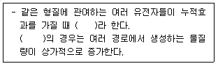
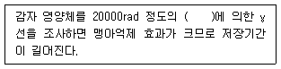
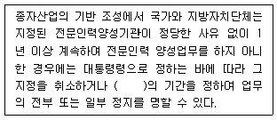
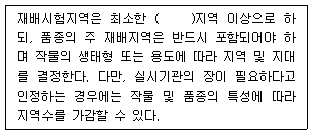
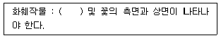
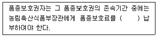
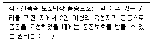
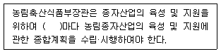
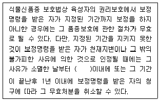

종자기사 (2022-03-05 기출문제)
1과목: 종자생산학
1. 자가불화합성을 이용한 배추과 채소의 F1 채종시 양친의 개화기를 일치시키는 방법으로 옳지 않은 것은?
- 저온처리
- 일장처리
- H2O2처리
- 파종기조절
(정답률: 알수없음)

2. 십자화과 채소의 채종 적기는?
- 백숙기
- 녹숙기
- 갈숙기
- 고숙기
(정답률: 알수없음)
3. 종자 순도분석을 위한 시료의 구성요소에 해당하지 않는 것은?
- 정립
- 수분함량
- 이종종자
- 이물
(정답률: 알수없음)
4. 무수정생식에 해당하지 않는 것은?
- 부정배생식
- 위수정생식
- 포자생식
- 웅성단위생식
(정답률: 80%)
5. 감자의 채종체계로 옳은 것은?
- 조직배양 → 원종 → 원원종 → 기본종 → 기본식물 → 보급종
- 조직배양 → 기본종 → 기본식물 → 원종 → 원원종 → 보급종
- 조직배양 → 원원종 → 원종 → 기본종 → 기본식물 → 보급종
- 조직배양 → 기본종 → 기본식물 → 원원종 → 원종 → 보급종
(정답률: 알수없음)
6. 종자의 생화학적 검사 방법으로 옳지 않은 것은?
- 착색법
- 전기전도율검사
- 효소활성측정법
- ferric chloride 법
(정답률: 60%)
7. 기내 인공발아 시험 시 광 조사를 할 필요가 없는 작물은?
- 파
- 상추
- 우엉
- 셀러리
(정답률: 37%)
8. 발아세를 높이는 방법으로 옳지 않은 것은?
- 프라이밍 처리
- 테트라졸리움액 처리
- 저온 처리
- 지베렐린액 처리
(정답률: 60%)
9. 종자의 휴면을 조절하는 요인으로 가장 거리가 먼 것은?
- 광
- 종피파상
- 온도
- 이산화탄소
(정답률: 알수없음)
10. 종자의 저장조직에 해당하지 않는 것은?
- 배유
- 배
- 외배유
- 자엽
(정답률: 60%)
11. 포장검사에서 함께 조사해야 할 사항으로 가장 옳지 않은 것은?
- 이전에 재배한 작물로부터 출현한 식물과 섞일 위험성이 있는가
- 1대 잡종의 경우 자웅비율이 충분하고 제웅이 충분히 되어 있는가
- 다른 작물과 가까워 타가수분이 충분히 잘 이루어질 수 있는가
- 병으로부터 안전한가
(정답률: 60%)
12. 콩과작물 종자의 외형에 나타나는 특수기관에 해당하지 않는 것은?
- 제
- 주공
- 외영
- 봉선
(정답률: 알수없음)
13. 채소류의 채종지 환경에 대한 설명으로 가장 옳은 것은?
- 고온에서 꽃가루가 충실하고 종자의 발육이 좋아서 채종량이 많아진다
- 등숙기로부터 수확기까지의 시기에 강우가 많아야 충실한 종자를 얻을 수 있다
- 후기에는 일시에 다량의 종자를 성숙시키므로 비효가 오래 지속되는 토양이 좋다
- 수분 매개충의 활동은 온도의 영향을 받지않는다
(정답률: 70%)
14. 종자검사 시 표본추출에 대한 설명으로 가장 옳지 않은 것은?
- 포장검사, 종자검사는 전수 또는 표본 추출 검사 방법에 의한다
- 표본 추출은 채종 전 과정에서 골고루 채취한다
- 기계적인 채취 시에는 일정량을 한 번만 채취하면 된다
- 가마니, 포대 등에 들어 있을 때는 손을 넣어 휘저어 여러번 채취한다
(정답률: 알수없음)
15. 보급종 채종량은 일반재배의 몇 %로 하는가?
- 50%
- 70%
- 80%
- 100%
(정답률: 46%)
16. 배낭모세포의 감수분열 결과 생긴 4개의 배낭세포 중 몇 개가 정상적인 세포로 남게 되는가?
- 1개
- 2개
- 3개
- 4개
(정답률: 46%)
17. 국제적으로 유통되는 종자의 검사규정을 입안하고 국제 종자분석 증명서를 발급하는 기관은?
- FAO
- UPOV
- ISTA
- ISO
(정답률: 64%)
18. 종자를 70℃ 정도에서 일정시간 건열처리 했을 때 종자전염성 병 방제에 효과가 있는 것으로만 나열된 것은?
- 보리 깜부기병, 벼 키다리병
- 수박 탄저병, 토마토 TMV
- 감자 역병, 밀 비린깜부기병
- 밀 비린깜부기병, 보리 깜부기병
(정답률: 30%)
19. 퇴화하는 종자의 특성으로 옳지 않은 것은?
- 발아율 저하
- 종자침출물 감소
- 저항성 감소
- 유리지방산 증가
(정답률: 60%)
20. 배휴면을 하는 종자의 휴면타파에 가장 효과적인 방법은?
- 습윤 저온처리
- 습윤 고온처리
- 건조 저온처리
- 건조 고온처리
(정답률: 알수없음)
2과목: 식물육종학
21. 체세포의 염색체 구성이 2n+1 일 때 이를 무엇이라 하는가?
- 일염색체
- 이질배수체
- 삼염색체
- 분리배수체
(정답률: 알수없음)
22. ( )에 알맞은 내용은?

- 우성상위
- 복수유전자
- 보족유전자
- 치사유전자
(정답률: 알수없음)
23. F1의 유전자 구성이 AaBbCcDd인 잡종의 자식 후대에서 고정된 유전자형의 종류는 몇가지 인가? (단, 모든 유전자는 독립유전 한다.)
- 4
- 12
- 16
- 30
(정답률: 알수없음)
24. 자가불화합성 식물을 자가수정 시켜 종자를 얻을 수 있는 방법으로만 알맞게 나열된 것은?
- 종간교배, 자연교배
- 여교배, 정역교배
- 뇌수분, 노화수분
- 웅성불임, 종간교배
(정답률: 60%)
25. 다음 중 식물병에 대한 진정저항성과 동일한 뜻을 가진 저항성은?
- 질적저항성
- 양적저항성
- 포장저항성
- 수평저항성
(정답률: 30%)
26. 다음 중 선발 효과가 가장 큰 경우는?
- 유전변이가 작고 환경변이가 클 때
- 유전변이가 작고 환경변이도 작을 때
- 유전변이가 크고 환경변이도 클 때
- 유전변이가 크고 환경변이가 작을 때
(정답률: 50%)
27. 자연교잡에 의한 십자화과 채소품종의 퇴화를 방제하기 위해 사용할 수 있는 방법으로 가장 옳은 것으로만 나열된 것은?
- 외딴섬재배, 망실재배
- 수경재배, B-9 처리
- 에틸렌 처리, 지베렐린 처리
- 옥신 처리, 수경재배
(정답률: 알수없음)
28. 트리티케일(Triticale)의 기원에 해당하는 것은?
- 보리 × 귀리
- 밀 × 보리
- 호밀 × 보리
- 밀 × 호밀
(정답률: 40%)
29. 완전히 자가수정하는 동형접합체의 1개체로부터 불어난 자손의 총칭은?
- 동질배수체
- 유전변이체
- 돌연변이
- 순계
(정답률: 60%)
30. 영양번식 작물의 교배육종 시 선발은 어느 때 하는 것이 가장 좋은가?
- 어느 세대든 관계가 없다.
- F1 세대
- F2 세대
- F6 세대
(정답률: 37%)
31. 교배모본 선정 시 고려해야 할 사항으로 옳지 않은 것은?
- 유전자원의 평가 성적을 검토한다.
- 유전분석 결과를 활용한다.
- 목적형질 이외에 양친의 유전적 조성의 차이를 크게 한다.
- 교배친으로 사용한 실적을 참고한다.
(정답률: 알수없음)
32. 품종의 유전적 취약성에 가장 큰 원인은?
- 재배품종의 유전적 배경이 다양화되었기 때문
- 재배품종의 유전적 배경이 단순화되었기 때문
- 농약사용이 많아지기 때문
- 잡종강세를 이용한 F1 품종이 많아졌기 때문
(정답률: 55%)
33. 다음 중 육종집단의 변이 크기를 나타내는 통계치는?
- 최소치와 평균치의 차이
- 평균치
- 분산
- 중앙치
(정답률: 73%)
34. 다음 중 동질배수체를 육종에 이용할 때 가장 불리한 점은?
- 종자의 크기
- 내병성
- 생육상태
- 임성
(정답률: 60%)
35. 다음 중 식물의 타가수정율을 높이는 기작으로 옳지 않은 것은?
- 폐화수정
- 자가불화합성
- 자웅이주
- 웅예선숙
(정답률: 80%)
36. 인위적인 교잡에 의해서 양친이 가지고 있는 유전적인 장점만을 취하여 육종하는 것은?
- 초월육종
- 조합육종
- 반수체육종
- 이수체육종
(정답률: 알수없음)
37. 다음 중 정역교배의 표현으로 가장 옳은 것은?
- (A × B) × A, (A × B) × B
- (A × B) × C, (C × A) × B
- A × B, B × A
- (A × B) × (C × D)
(정답률: 알수없음)
38. 유전적 변이를 감별하는 방법으로 가장 알맞은 것은?
- 전체형성능 검정
- 질소 이용률 검정
- 후대검정
- 유의성 검정
(정답률: 알수없음)
39. 피자식물의 중복수정에 해당하는 것은?
- 난핵 × 정핵, 극핵 × 정핵
- 난핵 × 정핵, 극핵 × 영양핵
- 난핵 × 생식핵, 극핵 × 영양핵
- 난핵 × 극핵, 영양핵 × 생식핵
(정답률: 64%)
40. 다음 중 아포믹시스에 대한 설명으로 옳은 것은?
- 웅성불임에 의해 종자가 만들어진다.
- 수정과정을 거치지 않고 배가 만들어져 종자를 형성한다.
- 자가불화합성에 의해 유전분리가 심하게 일어난다.
- 세포질불임에 의해 종자가 만들어진다.
(정답률: 73%)
3과목: 재배원론
41. 화성유도 시 저온·장일이 필요한 식물의 저온이나 장일을 대신하여 사용하는 식물호르몬은?
- CCC
- 에틸렌
- 지베렐린
- ABA
(정답률: 50%)
42. 다음 중 침수에 의한 피해가 가장 큰 벼의 생육 단계는?
- 분얼성기
- 최고분얼기
- 수잉기
- 고숙기
(정답률: 알수없음)
43. ( )에 알맞은 내용은?

- 13C
- 17C
- 60Co
- 52K
(정답률: 알수없음)
44. 노후답의 재배대책으로 가장 거리가 먼 것은?
- 저항성 품종을 선택한다.
- 조식재배를 한다.
- 무황산근 비료를 시용한다.
- 덧거름 중점의 시비를 한다.
(정답률: 알수없음)
45. 녹체춘화형 식물로만 나열된 것은?
- 완두, 잠두
- 봄무, 잠두
- 사리풀, 양배추
- 완두, 추파맥류
(정답률: 알수없음)
46. 다음 중 땅속줄기(지하경)로 번식하는 작물은?
- 마늘
- 생강
- 토란
- 감자
(정답률: 50%)
47. 순무의 착색에 관계하는 안토시안의 생성을 가장 조장하는 광파장은?
- 적색광
- 녹색광
- 적외선
- 자외선
(정답률: 40%)
48. 다음 중 작물의 주요온도에서 최적온도가 가장 낮은 작물은?
- 옥수수
- 완두
- 보리
- 벼
(정답률: 40%)
49. 뿌림골을 만들고 그 곳에 줄지어 종자를 뿌리는 방법은?
- 산파
- 점파
- 적파
- 조파
(정답률: 알수없음)
50. 작물의 수해에 대한 설명으로 옳은 것은?
- 수온이 높은 것이 낮은 것에 비하여 피해가 심하다.
- 유수가 정체수보다 피해가 심하다.
- 벼 분얼초기는 다른 생육단계보다 침수에 약하다.
- 화본과 목초, 옥수수는 침수에 약하다.
(정답률: 40%)
51. 앞 작물의 그루터기를 그대로 남겨서 풍식과 수식을 경감시키는 농법은?
- 녹색 필름 멀칭
- 스터블 멀칭
- 볏짚 멀칭
- 투명 필름 멀칭
(정답률: 70%)
52. 다음 중 T/R율에 대한 설명으로 옳은 것은?
- 감자나 고구마의 경우 파종기나 이식기가 늦어질수록 T/R율이 작아진다.
- 일사가 적어지면 T/R율이 작아진다.
- 토양함수량이 감소하면 T/R율이 감소한다.
- 질소를 다량시용하면 T/R율이 작아진다.
(정답률: 알수없음)
53. 우리나라 원산지인 작물로만 나열된 것은?
- 감, 인삼
- 벼, 참깨
- 담배, 감자
- 고구마, 옥수수
(정답률: 70%)
54. 광합성에서 C4 작물에 속하지 않는 것은?
- 사탕수수
- 옥수수
- 벼
- 수수
(정답률: 40%)
55. 벼의 비료 3요소 흡수 비율로 옳은 것은?
- 질소 5 : 인산 1 : 칼륨 1
- 질소 3 : 인산 1 : 칼륨 3
- 질소 5 : 인산 2 : 칼륨 4
- 질소 4 : 인산 2 : 칼륨 3
(정답률: 50%)
56. 등고선에 따라 수로를 내고, 임의의 장소로부터 월류하도록 하는 방법은?
- 등고선관개
- 보더관개
- 일류관개
- 고랑관개
(정답률: 19%)
57. 다음 중 식물학상 과실로 나출된 식물은?
- 벼
- 겉보리
- 쌀보리
- 귀리
(정답률: 알수없음)
58. 고무나무와 같은 관상수목을 높은 곳에서 발근시켜 취목하는 영양번식 방법은?
- 삽목
- 분주
- 고취법
- 성토법
(정답률: 알수없음)
59. 다음 중 단일식물에 해당하는 것으로만 나열된 것은?
- 양파, 상추
- 샐비어, 콩
- 시금치, 양귀비
- 아마, 감자
(정답률: 알수없음)
60. 식물체의 부위 중 내열성이 가장 약한 곳은?
- 완성엽(完成葉)
- 중심주(中心柱)
- 유엽(幼葉)
- 눈(芽)
(정답률: 알수없음)
4과목: 식물보호학
61. 완두콩바구미의 발생 횟수와 월동 형태로 가장 적절한 것은?
- 연 1회 발생, 성충
- 연 3회 발생, 번데기
- 연 4~5회 발생, 성충
- 연 7~10회 발생, 유충
(정답률: 알수없음)
62. 다음 중 종자소독제가 아닌 것은?
- 테부코나졸 유제
- 프로클로라즈 유제
- 디노테퓨란 수화제
- 베노밀·티람 수화제
(정답률: 알수없음)
63. 성충의 몸이 전체 흰색을 나타내며, 침 모양의 주둥이를 이용하여 기주를 흡즙하여 가해하는 해충은?
- 무잎벌
- 온실가루이
- 고자리파리
- 복숭아혹진딧물
(정답률: 55%)
64. 번데기가 위용(圍蛹)인 곤충은?
- 파리목
- 나비목
- 벌목
- 딱정벌레목
(정답률: 알수없음)
65. 잡초의 생활형에 따른 분류는?
- 여름형, 겨울형
- 수생, 습생, 건생
- 일년생, 월년생, 다년생
- 화본과, 방동사니과, 광엽류
(정답률: 50%)
66. 담자균문에 속하는 병원균으로 담자기에 격벽이 없는 균은?
- 보리 깜부기병균
- 밀 줄기녹병균
- 잣나무 털녹병균
- 뽕나무 버섯균
(정답률: 30%)
67. 흰가루병균과 같이 살아있는 기주에 기생하여 기주의 대사산물을 섭취해야만 살아갈 수 있는 병원균은?
- 반사물기생균
- 반활물기생균
- 순사물기생균
- 순활물기생균
(정답률: 알수없음)
68. 병원체가 생성한 독소에 감염된 식물을 사람이나 동물이 섭취할 경우 독성을 유발할 수 있는 병은?
- 벼 도열병
- 고추 탄저병
- 채소류 노균병
- 맥류 붉은곰팡이병
(정답률: 50%)
69. 곰팡이의 대사산물에서 분리된 항곰팡이성 항생물질은?
- 부라에스
- 포리옥신
- 가스가마이신
- 글리세오풀빈
(정답률: 30%)
70. 유기인계 살충제에 대한 설명으로 가장 거리가 먼 것은?
- 신경독이다.
- 적용해충의 범위가 좁다.
- 알칼리에 분해되기 쉽다.
- 일반적으로 잔효성이 짧다.
(정답률: 55%)
71. 작물 피해의 주요 원인 중 생물요소인 것은?
- 파이토플라스마
- 대기오염
- 토양습도
- 토양온도
(정답률: 알수없음)
72. 입제에 대한 설명으로 옳은 것은?
- 농약 값이 싸다.
- 사용이 간편하다.
- 환경오염성이 높다.
- 사용자에 대한 안전성이 낮다.
(정답률: 40%)
73. 병원균을 접종하여도 기주가 병에 전혀 걸리지 않는 것은?
- 면역성
- 내병성
- 확대저항성
- 감염저항성
(정답률: 46%)
74. 완전변태 곤충의 유리한 점은?
- 유충과 성충의 형태가 거의 같아서 분류에 용이하다.
- 유충과 성충의 먹이와 서식처의 경합이 생기지 않는다.
- 유충과 성충이 먹이가 같으므로 먹이 찾는데 유리하다.
- 유충과 성충이 같은 곳에 살 수 있어서 서식 공간 확보에 유리하다.
(정답률: 알수없음)
75. 저장 곡식에 피해를 주는 해충은?
- 화랑곡나방
- 온실가루이
- 꽃노랑총채벌레
- 아메리카잎굴파리
(정답률: 알수없음)
76. 복숭아혹진딧물에 대한 설명으로 옳지 않은 것은?
- 유충으로 월동한다.
- 무시충과 유시충이 있다.
- 식물 바이러스병을 매개한다.
- 천적으로는 꽃등에류, 풀잠자리류, 기생벌류 등이 있다.
(정답률: 10%)
77. 잡초의 종자가 바람에 의하여 먼 거리까지 이동이 가능한 것은?
- 등대풀
- 바랭이
- 민들레
- 까마중
(정답률: 알수없음)
78. 완전변태를 하는 곤충으로만 나열된 것은?
- 바퀴목, 하루살이목
- 파리목, 나비목
- 메뚜기목, 노린재목
- 총채벌레목, 벼룩목
(정답률: 알수없음)
79. 살충제에 대한 해충의 저항성이 발달되는 요인은?
- 살균제와 살충제를 섞어 뿌리기 때문에
- 같은 약제를 계속해서 뿌리기 때문에
- 약제를 농도가 진하게 만들어 조금 뿌리기 때문에
- 약제의 계통이나 주성분이 다른 약제를 바꾸어 뿌리기 때문에
(정답률: 55%)
80. 밭 잡초 중 일년생 잡초로만 나열된 것은?
- 쑥, 망초
- 메꽃, 쇠비름
- 쇠뜨기, 까마중
- 명아주, 바랭이
(정답률: 알수없음)
5과목: 종자관련법규
81. 종자검사요령상 배추 순도검사를 위한 시료의 최소 중량(g)은?
- 120
- 100
- 30
- 7
(정답률: 30%)
82. ( )에 알맞은 내용은?

- 24개월 이내
- 12개월 이내
- 6개월 이내
- 3개월 이내
(정답률: 19%)
83. 종자관리요강상 수입적응성시험의 심사기준에 대한 내용이다. ( )에 알맞은 내용은?(단, 시설 내 재배시험인 경우는 제외한다)

- 7개
- 5개
- 4개
- 2개
(정답률: 37%)
84. 종자관리요강상 겉보리 포장검사 시기 및 회수는 유숙기로부터 황숙기 사이에 몇 회 실시 하는가?
- 7회
- 5회
- 3회
- 1회
(정답률: 알수없음)
85. 종자관리요강상 사진의 제출규격 촬영부위 및 방법에서 생산·수입판매신고품종의 경우에 대한 설명이다 ( )에 알맞은 내용은?

- 화훼종자의 표본
- 접목 시설장의 전경
- 개화기의 포장전경
- 유묘기의 포장전경
(정답률: 알수없음)
86. ( )에 알맞은 내용은?

- 매년
- 2년에 1번
- 3년에 1번
- 5년에 1번
(정답률: 70%)
87. 품종보호권의 존속기간은 과수와 임목의 경우 몇 년으로 하는가?
- 25년
- 15년
- 10년
- 5년
(정답률: 64%)
88. ( )에 알맞은 내용은?

- 공유(共有)로 한다.
- 1인으로 제한한다.
- 순번을 정하여 격년제로 실시한다.
- 순번을 정하여 3년마다 변경하여 실시한다.
(정답률: 67%)
89. 거짓이나 그 밖의 부정한 방법으로 품종보호결정 또는 심결을 받은 자의 벌칙은?
- 3년 이하의 징역 또는 3천만원 이하의 벌금
- 5년 이하의 징역 또는 3천만원 이하의 벌금
- 5년 이하의 징역 또는 5천만원 이하의 벌금
- 7년 이하의 징역 또는 1억원 이하의 벌금
(정답률: 알수없음)
90. 종자검사요령상 종자 건전도 검정에서 벼의 깨씨무늬병균의 배양방법은?
- 암기 12시간, 명기 12시간씩 22℃에서 3일간 배양
- 암기 12시간, 명기 12시간씩 22℃에서 7일간 배양
- 암기 12시간, 명기 12시간씩 22℃에서 15일간 배양
- 암기 12시간, 명기 12시간씩 22℃에서 30일간 배양
(정답률: 19%)
91. 식물신품종 보호법상 품종보호에 대해 취소결정을 받은 자가 이에 불복하는 경우에는 그 등본을 송달받은 날부터 며칠 이내에 심판을 청구할 수 있는가?
- 15일
- 30일
- 40일
- 100일
(정답률: 알수없음)
92. 국가품종목록의 등재에서 품종목록 등재의 유효기간은 등재한 날이 속한 해의 다음 해부터 얼마까지로 하는가?
- 5년
- 10년
- 15년
- 20년
(정답률: 알수없음)
93. 종자검사요령상 포장검사 병주 판정기준에서 벼 깨씨무늬병의 병주판정기준은?
- 위로부터 1엽의 중앙부 3㎝ 길이 내에 3개 이상 병반이 있는 주
- 위로부터 2엽의 중앙부 3㎝ 길이 내에 5개 이상 병반이 있는 주
- 위로부터 2엽의 중앙부 5㎝ 길이 내에 30개 이상 병반이 있는 주
- 위로부터 3엽의 중앙부 5㎝ 길이 내에 50개 이상 병반이 있는 주
(정답률: 20%)
94. 육묘업 등록을 한 날부터 1년 이내에 사업을 시작하지 아니하거나 정당한 사유없이 1년이상 계속하여 휴업한 경우 육묘업 등록이 취소되거나 얼마 이내의 영업의 전부 또는 일부의 정지를 받는가?
- 1개월 이내
- 3개월 이내
- 6개월 이내
- 12개월 이내
(정답률: 50%)
95. 종자의 보증에서 자체보증의 대상에 해당하지 않는 것은?
- 도지사가 품종목록 등재대상작물의 종자를 생산하는 경우
- 군수가 품종목록 등재대상작물의 종자를 생산하는 경우
- 구청장이 품종목록 등재대상작물의 종자를 생산하는 경우
- 국립대학교 연구원이 품종목록 등재대상작물의 종자를 생산하는 경우
(정답률: 알수없음)
96. 종자검사요령상 과수 바이러스·바이로이드 검정방법에서 시료 채취 방법은?
- 과수 포장에 종자관리사가 임의로 1주를 선정하여 병이 발생한 잎을 3개 채취
- 1주 단위로 잎 등 필요한 검정부위를 나무 전체에서 고르게 1개를 깨끗한 시료용기에 채취
- 1주 단위로 잎 등 필요한 검정부위를 나무 전체에서 고르게 3개를 깨끗한 시료용기에 채취
- 1주 단위로 잎 등 필요한 검정부위를 나무 전체에서 고르게 5개를 깨끗한 시료용기에 채취
(정답률: 알수없음)
97. ( )에 알맞은 내용은?

- 1년
- 2년
- 3년
- 5년
(정답률: 40%)
98. 보증서를 거짓으로 발급한 종자관리사의 벌칙은?
- 1년 이하의 징역 또는 1천만원 이하의 벌금
- 3년 이하의 징역 또는 2천만원 이하의 벌금
- 3년 이하의 징역 또는 5천만원 이하의 벌금
- 5년 이하의 징역 또는 7천만원 이하의 벌금
(정답률: 알수없음)
99. ( )에 알맞은 내용은?

- 3일
- 7일
- 14일
- 30일
(정답률: 알수없음)
100. 종자관리요강상 사후관리시험의 기준 및 방법에서 검사항목에 해당하지 않는 것은?
- 종자전염병
- 품종의 진위성
- 품종의 순도
- 품종의 기원
(정답률: 50%)